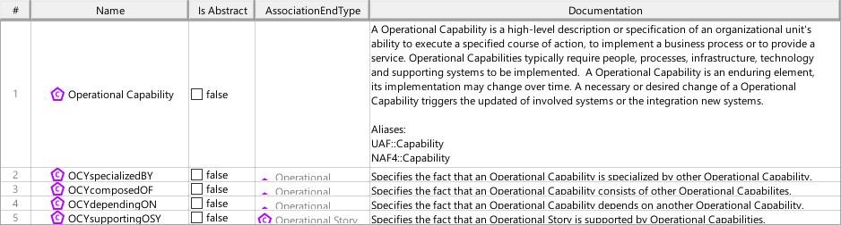

D2_COTD Framework Concept Definition Viewpoint
| Domain | Aspect | Maturity |
|---|---|---|
| SAF Development | Taxonomy & Structure |

The Framework Concept Viewpoint allows to define SE concepts and their relationships to be supported by the SAF. It shall specifiy
The viewpoint is intended to be used for development or extension of the SAF.
The Viewpoint supports the definition of “Architecture description (AD) elements”, and the definition of “AD element correspondence” and “Specification of an architecture description framework” as defined in ISO42010:2022
A Block Definition Diagram (BDD) featuring elements of SCM_Concept representing SE concepts to be supported by SAF. SCM_Concept can be classes of items and relations between items. It is also possible to create relations to relations (SCM_Concepts can be Classes, Associations and Association Classes). For relational concepts, it is reqired to display the direction, and to define the multiplicities. See SAF Development Guide for details on concept modeling conventions
A table featuring SCM_Concepts and their descriptions. In case of relational concepts the related concepts are shown also.
The following Stereotypes / Model Elements are used in the Viewpoint:
The Diagram shows the concepts exposed by the viewpoint, and related concepts if necessary.
| Concept | Documentation |
|---|---|
| SE Concept | specifies a SE concept to be supported by SAF |
| SECrelatesToSEC | specifies a relationship of a concept to an other. |
The Diagram shows the implementation of exposed concepts.
| Concept | Realization |
|---|---|
| SE Concept | SCM_Concept |
| SECrelatesToSEC | SCM_Concept |